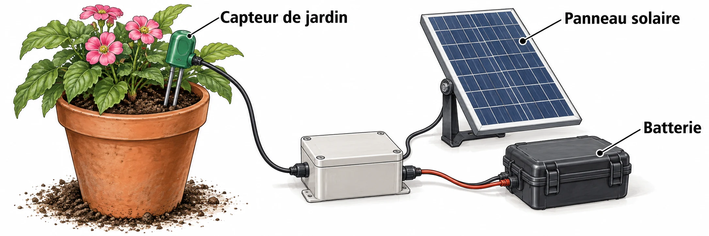

OBSERVER · EXPÉRIMENTER · EXPLIQUER
Alimenter un capteur de jardin
Fais avancer les jours pour observer le stock d’énergie. Compare avec tes calculs.

✎ Garde ta feuille à côté de toi.Ordinateur : manipulations et mesures simulées. Papier : relevés, réponses, calculs et croquis. Matériel réel : essai complémentaire si disponible.
Des observations pour expliquer
- Q1 : calcule le besoin et les autonomies sur papier avant l’essai.
- Q3 et Q6 : discute l’absence de soleil et les limites du modèle.
Appuie ton explication sur une valeur, un changement observé ou une comparaison. Distingue ce que montre le modèle et ce qui reste à vérifier.